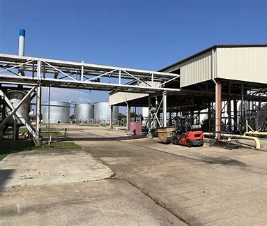
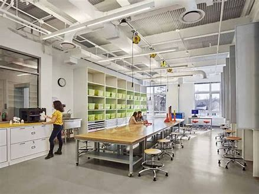

April 2025 – May 2025
At Palmer International, I worked in a chemical manufacturing environment and gained exposure to industrial operations, process monitoring, and production workflows. My work involved reviewing temperature trends across production runs and helping analyze operational data to identify irregularities and support troubleshooting efforts.
This experience strengthened my understanding of how engineering data can be used to improve efficiency, support quality control, and reduce process instability. It also gave me insight into plant equipment, safety expectations, and real-world engineering problem solving.

September 2024 – April 2025
In this role, I diagnosed and resolved software and device issues for students and faculty, helping keep school technology operating smoothly. I handled troubleshooting for school-issued devices and used Windows-based support methods to improve both speed and accuracy in resolving technical problems.
This position strengthened my troubleshooting skills, technical communication, and ability to solve problems efficiently in a fast-paced environment. It also gave me experience supporting users directly and working through technical issues in a practical setting.
